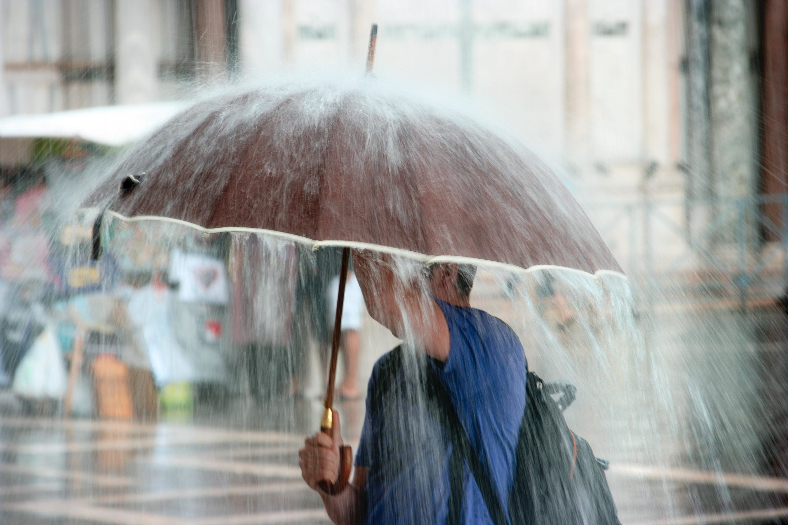
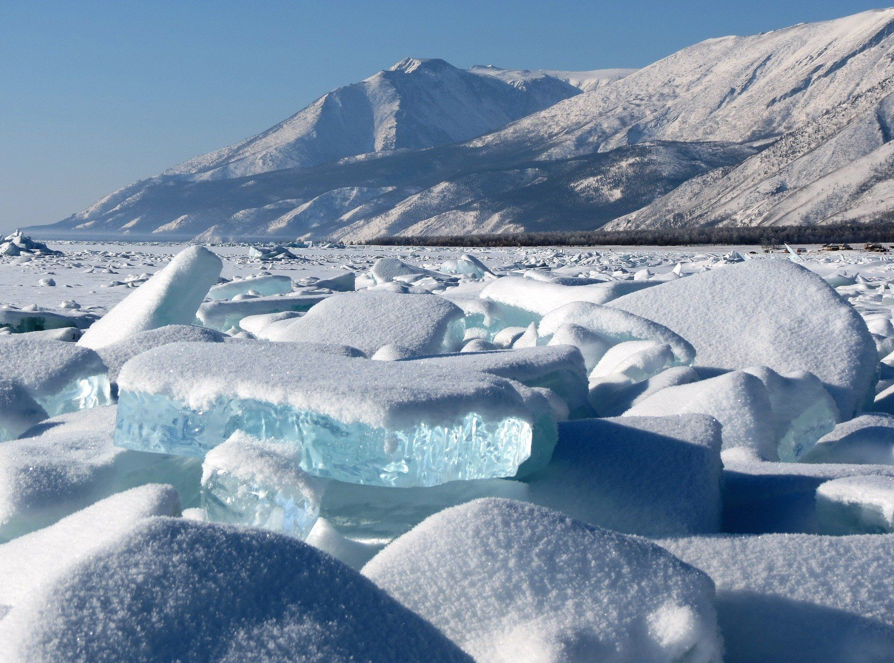
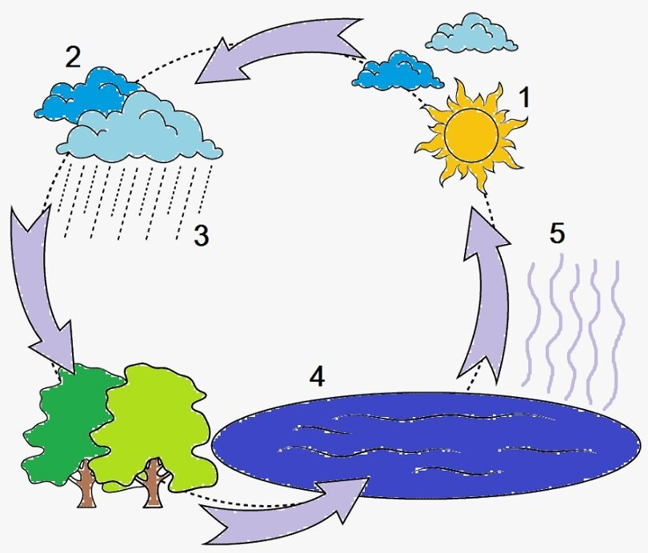

1. Дождь
Дождь — это осадки, которые образуются, когда водяной пар в атмосфере конденсируется в капли воды и падает на землю. Он может иметь разные размеры, что зависит от температуры воздуха и силы ветра. Например, в тёплую погоду капли большие и медленно падают, а в холодную — они маленькие и быстро падают на землю.
Дождь — важная часть водного цикла: вода испаряется, образует облака, а затем выпадает в виде дождя, заполняя реки и озёра.
2. Снег и лёд
Снег образуется, когда водяной пар в атмосфере замерзает и образует кристаллы льда, которые соединяются в снежинки. Эти снежинки имеют разные формы в зависимости от температуры и влажности воздуха.
Лёд — это замёрзшая вода, которая отличается от снега тем, что состоит из крупных кристаллов. Лёд образуется при температуре ниже 0°C.
3. Реки и озёра
Реки и озёра формируются за счёт дождей и таяния снега. Вода в реках течёт по естественным руслам, а озёра формируются в низинах, где вода накапливается. Реки и озёра играют важную роль в экосистемах, поддерживая жизнь растений и животных.

4. Цикл воды в природе
Цикл воды включает несколько этапов: испарение воды с поверхности водоёмов, конденсация пара в облака и осадки в виде дождя или снега. Это непрерывный процесс, который поддерживает баланс воды на планете.
Пройти задание
Проверьте свои знания, пройдя задание.
Перейти к заданию